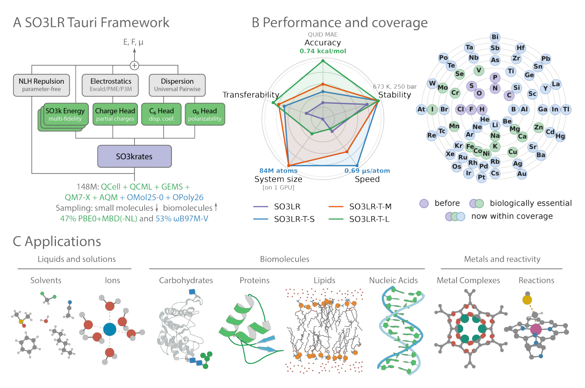
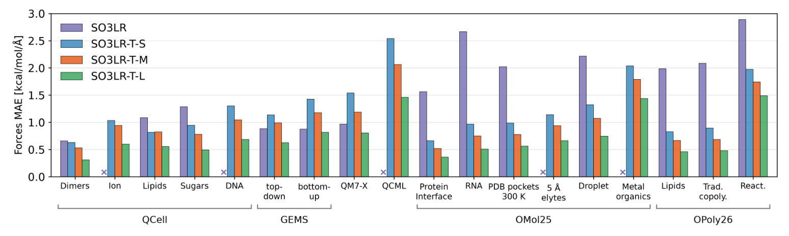
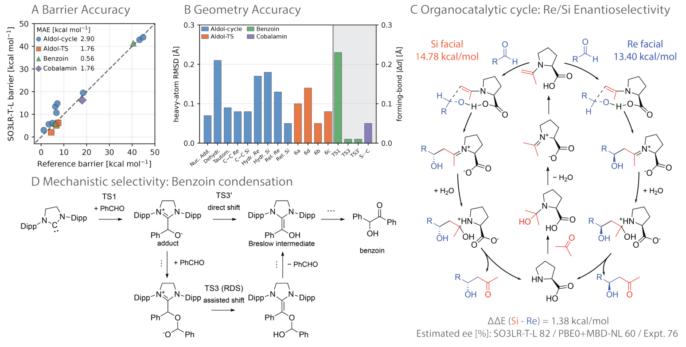
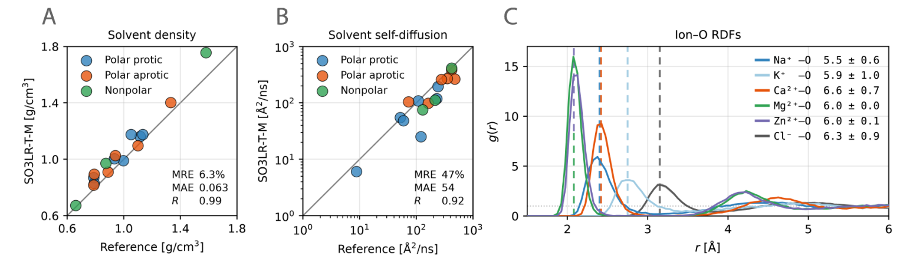
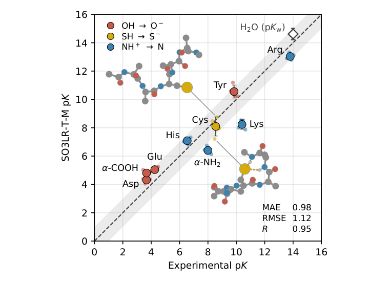
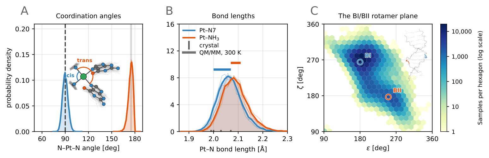
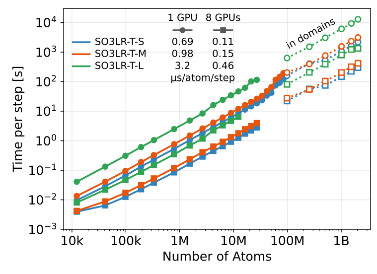

SO3LR Tauri：把广泛量子化学数据与显式长程物理接成通用反应力场
论文原文 ↗论文：Adil Kabylda、Florian N. Brünig、Miguel Gallegos 等，SO3LR Tauri: Generally Applicable Force Fields for Reactive (Bio)Molecular Simulations Covering the Periodic Table，arXiv，2026。
链接：官方页面｜｜模型与代码
用同一套力场模拟蛋白质、核酸、脂质、水、离子和金属中心，难点不只是让每种原子的力都足够准确。这些成分混合以后，氢键、静电、色散和配位共同决定结构；质子转移或催化反应还会改变成键关系。经典力场通常分别为各类分子参数化，再把参数拼到一个体系里。机器学习势有机会学习统一的能量面，但需要同时处理化学覆盖、远距离相互作用和大体系计算成本。
SO3LR Tauri 沿着这三个方向共同推进：用约 1.48 亿个结构、85 种元素的量子化学数据训练紧凑网络，由网络预测局部能量与随环境变化的物理参数，再显式计算短程排斥、长程静电和色散。相较于前代 SO3LR 的约 400 万结构、8 种元素，这次扩展不仅增加数据，还改变了混合理论数据的训练方式、物理模块和推理实现，使同一预训练模型能够接到反应路径与多类生物分子动力学。
方法怎样做：局部网络学化学，物理模块把相互作用延伸到远处
一次使用从原子坐标、元素种类、总电荷和自旋多重度开始。例如，对一个浸在水和离子中的铂—DNA 交联结构，输入描述铂、鸟嘌呤、水及离子的位置和电子态；模型据此返回能量和原子力，动力学积分器再用这些力推进下一步坐标。整个过程中，成键关系随几何进入势能计算，不需要事先为铂中心指定一组固定键和角参数。
主干 SO3krates 是一种等变消息传递网络：每个原子汇总截断半径内邻居的距离、方向和元素信息，形成局部化学表示；等变性使结构旋转时，内部方向特征随之旋转，最终能量保持不变。小、中、大三个模型使用两到三层消息传递，截断半径为 4.5–5.0 Å。它们把同一套局部表示交给几个输出头，分别产生原子能量、部分电荷、极化率和色散系数。

图1｜整体方法与能力（原文 Fig. 1）。A 中局部网络预测的能量、电荷和色散参数进入不同物理项，最后汇总成总能量；B 比较模型尺寸、速度和覆盖，稳定性与迁移性为定性概括；C 展示同一模型面对的分子类别。
总能量分成四部分：短距离排斥＋网络局部能量＋静电＋色散。这样分工的目的，是让网络学习复杂的局部化学，同时把已知的距离衰减规律直接写入模型。两个分子远到彼此不再是网络邻居时，电荷之间的库仑作用和色散吸引仍继续存在。
短距离排斥使用按元素对预先计算的 NLH 屏蔽核排斥势。当原子靠得很近，它提供陡峭排斥；网络的局部能量仍可在有数据的区域学习修正。静电模块接收预测电荷，先把总和调整到输入总电荷，再计算平滑的库仑能；周期体系采用粒子网格 Ewald 求和，把远处周期像的影响纳入。电荷通过分子偶极矩间接训练。
色散模块也接受局部环境信息。前代用一个原子体积比例同时缩放极化率和 C₆ 系数；Tauri 分别预测这两个比例，让同一元素在不同键合环境中的响应有更大自由度。原子参数按混合规则组合成原子对的色散系数，再计算经短程阻尼的 r⁻⁶、r⁻⁸ 和 r⁻¹⁰ 吸引。周期体系中的主要 r⁻⁶ 远程部分同样进入网格求和。各项共同组成可微能量，原子力由总能量对坐标求导，网络预测的参数如何随坐标变化也包含在内。
混合数据怎样变成一个实际可用的模型
训练数据来自 QCML、QCell、OMol25、OPoly26 及原有分子片段数据。直接按库的大小抽样，会被数量庞大的小分子构象淹没，因此作者降低若干小分子子集的采样权重，提高糖、核酸、脂质、离子和蛋白片段的权重，让有限训练预算更多覆盖目标相互作用。
这些数据还来自两类量子化学参考：PBE0 配合多体色散，以及 ωB97M-V。作者先让它们共用网络主干、使用各自的能量输出头；一个结构只更新与其理论来源对应的头。PBE0 数据提供能量、力，以及部分来源的偶极矩、极化率和色散标签；ωB97M-V 数据只贡献力标签。缺少的标签在损失中跳过。因此，共享表示能吸收两套数据里的几何—力关系，而早期训练保留各自的输出通道。
后期训练把 PBE0 头作为单一生产头的起点，让它和主干共同接受两套来源的数据；同时将长程作用从早期的 10 Å 扩展到训练结构中的全部原子对。最后两阶段重新平衡水数据，加入 ωB97M-V 的中性水簇，以调整氢键网络。推理时使用的是这一个生产头。训练还采用对大残差影响较弱的稳健损失，处理大规模多来源数据里的异常标签。三个尺寸的模型分别在单张 A100 上训练约 417 GPU 小时。
模型训练后，输入结构即可计算能量和力。反应研究把它接到过渡态搜索，液体和生物分子研究把它接到动力学；随后分别用量子化学参考、实验性质和结构分布评价结果。
得到了什么结果：从局部化学精度走到反应与凝聚态
扩大覆盖以后，非共价作用和反应路径怎样变化

图2｜训练覆盖与模型尺寸的效果（原文 Fig. 2）。各组柱对应不同分子类别，纵轴是原子力平均绝对误差；绿色大模型通常最低。前代只支持8种元素，紫色柱按其支持范围计算，叉号处没有可比柱。
最直接的变化是新化学类别进入了可用范围。中模型在蛋白质、糖、脂质和核酸的多个测试子集上给出约 0.5–1.2 kcal/mol/Å 的力误差。外部非共价基准进一步检验了分子之间的作用：相对前代，SAPT10k 相互作用能误差由 0.90 降至 0.45 kcal/mol，核碱基对误差由 1.75 降至 0.78 kcal/mol。在带电蛋白—配体活性位点 PLA15 上，中模型为 3.81 kcal/mol、相对误差 2.1%。这些相互作用能采用同一复合物与远距离分离参考的能量差计算。
糖构象提供另一种考验：羟基朝向改变会重新组织分子内氢键。中模型在葡萄糖和麦芽糖构象上的能量误差为 1.36 kcal/mol，排序相关系数为 0.89；所比较的专用经典糖力场和半经验方法误差约 2.96–5.55 kcal/mol。这说明扩大训练空间的收益进入了具体构象选择。

图3｜反应能量面能否保留正确通路（原文 Fig. 3）。A、B 分别比较势垒和过渡态几何；C 显示脯氨酸催化 aldol 循环中的 Re/Si 竞争；D 显示 benzoin 缩合中直接与醛辅助质子转移的不同路径。
反应部分使用大模型。对脯氨酸催化 aldol 循环，作者从反应物和产物结构出发，用弹性带寻找路径，再精修路径最高点；用唯一虚频确认结构只有一个不稳定方向，再沿内禀反应坐标向两侧追踪，确认过渡态连接对应中间体。模型找到了完整循环中的九个过渡态，平均重原子几何偏差约 0.12 Å。在这些模型几何上重算 PBE0+MBD-NL，九个势垒的平均偏差为 2.9 kcal/mol。决定立体选择性的 C–C 成键步偏好 Re 面，预测能垒差 1.38 kcal/mol，对应 298 K 下约 82% 的对映体过量；类似反应的实验值为 76%。
benzoin 缩合与钴胺素甲基转移则从已发表过渡态结构开始精修。前者保持了“第二个醛辅助质子转移”远比直接迁移有利的机理次序；后者在含显式水的金属辅因子簇中得到背面甲基转移过渡态，移去轴向咪唑后，势垒升高约 6.2 kcal/mol。这把模型的化学覆盖从非共价构象延伸到了断键、成键与金属参与的反应。
水、离子和生物分子的集体行为能否由同一套势产生

图4｜从分子作用到液体性质（原文 Fig. 4）。A、B 分别把16种溶剂的密度和自扩散与实验比较；C 的峰位表示水合壳层距离，图例同时给出配位数及波动。密度与扩散的偏差尺度不同。
作者用中模型在接近室温、常压条件下模拟水和15种有机溶剂，每种采用四个独立副本。密度相对实验的平均相对误差为 6.3%，水密度约 0.990 g/cm³；在 Na、K、Ca、Mg、Zn 盐溶液中，也得到与实验接近的第一水合壳层距离和配位数。Mg²⁺、Zn²⁺维持接近六配位的紧密壳层，K⁺的配位数变化更宽。
液体输运是作者特别强调仍需改进的部分：经有限尺寸修正后，16种溶剂的自扩散平均相对误差约47%，水扩散约为实验的一半。密度较接近实验与氢键重排速度准确，是两种不同要求；这也解释了作者为何同时评价静态结构和动态性质。
酸碱平衡进一步要求模型让质子真正从残基进入水。作者把一个可滴定残基放进丙氨酸五肽，在显式水中使用自适应偏置力采样：以“转移质子离残基多远”为核心构造平滑反应坐标，逐步填平自由能障碍，使质子在结合态和溶剂态之间往返。积分平均力得到自由能，再根据结合态概率与远处游离离子密度，换算标准态解离常数。

图5｜同一反应势给出的酸碱平衡（原文 Fig. 5）。横、纵轴分别为实验和模拟 pK，灰带是±1单位；插图展示半胱氨酸硫负离子接受水或主链氢键的不同局部环境。
九个可滴定基团的 pKa 平均绝对误差为 0.98，水自解离 pKw 约14.6。半胱氨酸还显示了构象与酸度的联系：主链形成氢键稳定硫负离子后，相应自由能分析给出更低的 pKa。这项评价要求势同时描述局部成键变化和溶剂重组，是比只测力误差更完整的下游检验。

图6｜金属配位与核酸构象（原文 Fig. 6）。A、B 是铂中心的键角和键长分布，对照晶体及QM/MM参考；C 中两个高密度区域对应DNA骨架的 BI、BII 构象。
同一中模型还模拟蛋白质、糖蛋白、脂质双层及核酸。在顺铂—DNA 交联体系的四个动力学副本中，铂中心持续保持四配位和近方平面几何；没有为这一中心另加固定键角约束。未修饰 DNA 双链也保持 B 型整体结构，并采到 BI、BII 两类骨架构象。这展示了统一势在多种组分共同存在时的实际使用方式。
领域贡献：训练配方、物理分工与计算实现一起扩展泛化

图7｜大体系的计算代价（原文 Fig. 7）。实心点是包含周期长程求和的动力学每步耗时；空心虚线是按域依次计算的一次力评估。横、纵轴均为对数尺度，可同时比较模型尺寸、原子数和设备数。
这次扩展还有一个实际支点：推理不再保存庞大的逐边中间数组，而用融合 GPU 核函数流式处理邻居，配合径向函数表格和专用反向计算。在两种实现都能运行的 A100 测试规模上，中模型相对邻居表实现约快3.7–4.0倍，每原子内存从约1.3 MB降到最快模式的9.4 KB。单张288 GB MI355X 上，10万原子以上、最快内存模式的基准中位成本，小、中、大模型分别约为每原子每步0.69、0.98和3.2微秒。更大体系改用重算中间量的省内存模式：中模型最低约3.1 KB/atom，小、中模型在这种最省内存模式下的成本约为最快模式的1.9–2.1倍。单卡测试的最大完整周期体系分别达到约8400万、8400万和2700万原子；按域的一次力评估进一步展示了更大结构的处理路线。
SO3LR Tauri 最值得借鉴的是一套相互配合的泛化策略：**按目标化学重采样数据，分阶段融合不同理论来源，用局部网络预测环境依赖参数，再由明确物理项处理长程作用。**模型扩大覆盖以后，还通过反应路径、溶剂、离子、酸碱平衡与金属生物分子检验共同作用下的行为。它把广泛化学训练与可运行的大体系模拟接在一起，也把扩散、反应势垒和慢构象采样列为后续改进的重点。
原始摘要完整中文翻译
机器学习力场（MLFF）旨在建立一个统一模型，以量子力学精度描述所有主要类别的（生物）分子。我们提出 SO3LR Tauri，这是一系列朝向该目标开发的机器学习力场，将快速的 SO3krates 网络与显式、基于物理的相互作用模块相耦合：针对原子对的短程排斥、依赖环境的色散以及静电；每一部分都在其原始形式的基础上得到改进。这些模型使用来自多个量子化学数据集、覆盖85种元素的1.48亿个结构进行训练。相对于耦合簇参考，模型准确再现了核碱基对和带电蛋白—配体的相互作用、碳水化合物构象的能量次序以及分子偶极矩。它们还解析了有机反应和酶促反应的过渡路径。动力学模拟再现了水和有机溶剂的实验密度、一价和二价离子的水合结构、氨基酸侧链的 pKa，以及蛋白质、膜、核酸、糖蛋白和含金属生物分子的结构与动力学，所有这些都无需针对具体体系进行拟合。模型以三种尺寸发布，速度达到每原子0.7–3.2微秒，并可在单张GPU上扩展到2700万至8400万个原子。仍有大量工作需要完成：实现对液体静态和动态性质、反应势垒的预测精度，扩大化学与构象空间覆盖，以及达到描述生物分子过程所需的采样和推理速度。